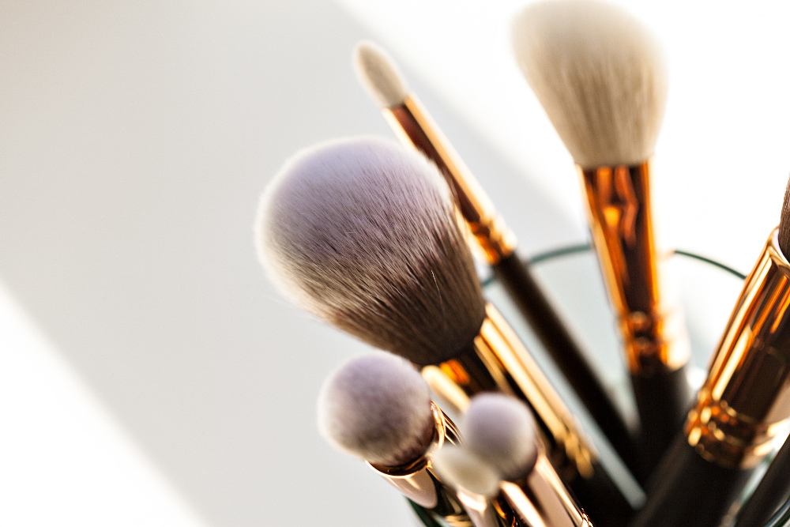

O Melhor do Mercado
Descubra como ter a profissão dos seus sonhos!
Veja tudo o que é necessário para trabalhar com maquiagem de forma profissional, adquirindo este curso ministrado por maquiadoras experientes e referências na área. Aprenda do básico ao avançado e lote sua agenda!
